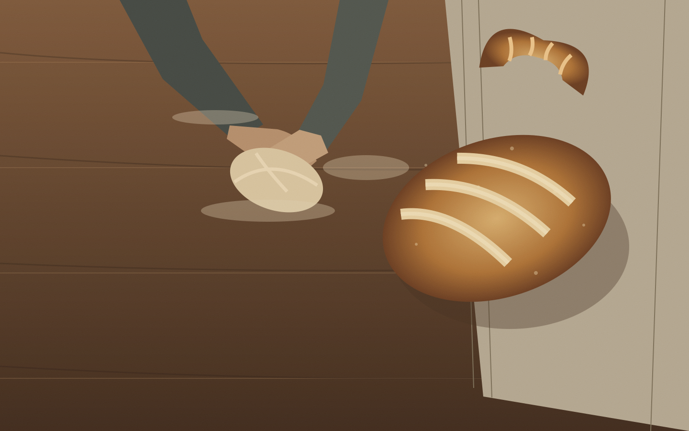

Wholesale
Supplying cafés,
restaurants & hotels.
We bake for over 40 local businesses across the city. If you're interested in a wholesale account, get in touch.
[ Enquire ]
Dublin · Flour, water, time.
Baked by hand. Served with care.
An illustrated morning in the bakehouse
Our craft
Made daily from simple ingredients — flour, water, time.
Nothing hurried. Nothing unnecessary. Just a good loaf, still warm, and the promise of another tomorrow.
From the ovens
Our process
No shortcuts, no additives. Our sourdough ferments for 24 hours. Our croissants are laminated over two days. This is how good bread is made.
Our sourdough culture has been alive for over ten years.
Every loaf is formed by hand, never by machine.
Stone deck ovens, extreme heat, steam injection.
We mix in small batches, fold the dough through the afternoon and let the cold overnight rest develop the flavour. Our daily menu changes with the bake.
Wholesale
We bake for over 40 local businesses across the city. If you're interested in a wholesale account, get in touch.
[ Enquire ]Custom orders
Custom cakes and bespoke orders available with 5 days notice. Contact us to discuss what you have in mind.
[ Get in Touch ]“The best sourdough I've had outside of San Francisco. They have a real starter, real patience, and it shows.”Sarah M. · Local resident
“We've been sourcing croissants from Mourne for our café for three years. Our customers ask for them by name.”James T. · Café owner
“They took time to understand what we wanted and delivered something completely beautiful.”Elena R. · Customer
Illustrative testimonials from the concept brief.
@mourneartisanbakery
[ Follow Us ]Original illustrated bakehouse studies, not a live social feed.
Bakery
14 Chapel Street
Dublin 2 · D02 VX68
Opening hours
Mon – Sat 7:00am – 6:00pm
Sunday 8:00am – 2:00pm
Get in touch
14 CHAPEL STREET